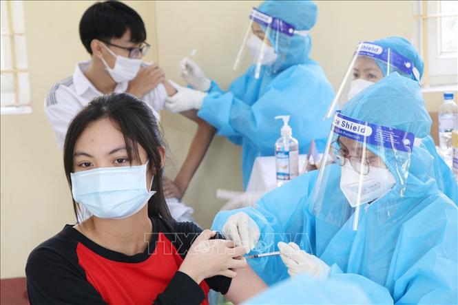
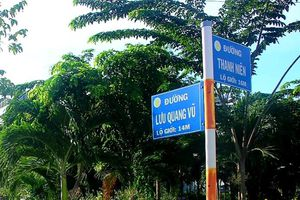
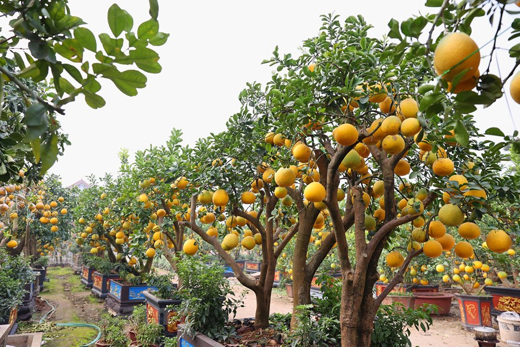
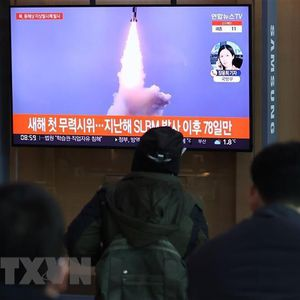

-

Việt Nam tiếp tục chiến lược vaccine từng thành công vào năm 2021
Thứ Tư, 05/01/2022 09:41|Thời sự
Từ tháng 3/2021 đến hết ngày 2/1/2022, nước ta đã tiếp nhận hơn 195 triệu liều vaccine và Bộ Y tế đã phân bổ 113 đợt với tổng số 176,8 triệu liều, còn khoảng 18,2 triệu liều mới được tiếp nhận, đang trong thời kỳ tiến hành các thủ tục để kiểm định chất lượng. -
Quế Ngọc Hải sẽ không giữ băng đội trưởng tuyển Việt Nam
Thứ tư, 5/1/2022 08:48 (GMT+7)
Theo tìm hiểu của Zing, trung vệ Quế Ngọc Hải sẽ không đeo băng đội trưởng tuyển Việt Nam. Cầu thủ sinh năm 1993 cũng vắng mặt ở trận gặp Australia do bị treo giò Tuy nhiên, nguyên nhân HLV Park lấy băng đội trưởng của Quế Ngọc Hải là nhằm hướng đến sự thay đổi. Còn lý do nào khác có thể HLV Park sẽ trả lời cụ thể sau -

WHO: Ca mắc Omicron tăng vọt gây nguy cơ biến chủng COVID-19 nguy hiểm hơn
Thứ Tư, 05/01/2022 07:13:47 +07:00
Dù lây lan với tốc độ mạnh mẽ trên khắp thế giới song chủng Omicron dường như ít nghiêm trọng hơn nhiều so với lo ngại ban đầu. Điều này dấy lên hy vọng rằng đại dịch COVID-19 có thể được kiểm soát và cuộc sống trở lại bình thường hơn. -
Khởi tố bổ sung tội giết người đối với 'dì ghẻ' hành hạ bé 8 tuổi đến tử vong
Thứ Tư, ngày 5/1/2022 - 08:48
(PLO)- Công an TP.HCM đã khởi tố bổ sung tội giết người đối với Nguyễn Võ Quỳnh Trang, khởi tố tội che giấu tội phạm đối với Nguyễn Kim Trung Thái, cha đẻ bé gái 8 tuổi bị bạo hành, bị đánh chết. -
Gần 700 học sinh tranh tài vào đội tuyển dự thi học sinh giỏi quốc gia
(HNM) - Thông tin từ Sở Giáo dục và Đào tạo Hà Nội ngày 4-1 cho biết, Sở đã hoàn thành công tác chấm thi kỳ thi học sinh giỏi thành phố cấp trung học phổ thông năm học 2021-2022. Kỳ thi này có sự tham gia của 3.404 học sinh. -

Đặt tên 38 đường, phố mới và điều chỉnh độ dài 9 tuyến phố
(HNM) - Chủ tịch UBND thành phố Hà Nội Chu Ngọc Anh vừa ký ban hành Quyết định số 5450/QĐ-UBND về việc đặt tên và điều chỉnh độ dài một số đường, phố và công trình công cộng trên địa bàn thành phố Hà Nội. -
Triều Tiên phóng vật thể bay không xác định ra biển Nhật Bản
Thứ Tư, 5/1/2022 10:01
Đây là vụ phóng đầu tiên của Triều Tiên trong năm nay, diễn ra vài ngày sau khi nhà lãnh đạo Triều Tiên Kim Jong-un cam kết tiếp tục phát triển quân đội nhằm đối phó với tình hình quốc tế bất ổn.
-
Tổng Bí thư: Tập trung thực hiện hiệu quả phục hồi kinh tế, kiểm soát lạm phát
Thứ Tư, 12:31, 05/01/2022
-

Vườn bưởi cảnh trăm triệu ở Văn Giang chuẩn bị phục vụ Tết Nguyên Đán
05/01/2022 14:00 GMT+7
-

Hà Nội đang triển khai phương án đáp ứng 100.000 ca nhiễm COVID-19
05/01/2022 | 14:00
-
Nga sẽ lưu hành thêm vaccine ngừa COVID-19 trong năm 2022
(Vietnam+) 05/01/2022 14:00 GMT+7
-
Xem trước thiết kế tuyệt đẹp của siêu xe Lamborghini Huracan 2023
05/01/2022 14:00 GMT+7
-
MU trở lại với Dybala, PSG diễn lại vụ Messi
05/01/2022 13:54 GMT+7
-

Hàn Quốc xác định địa điểm phóng tên lửa đạn đạo của Triều Tiên
(Vietnam+) 05/01/2022 13:53 GMT+7